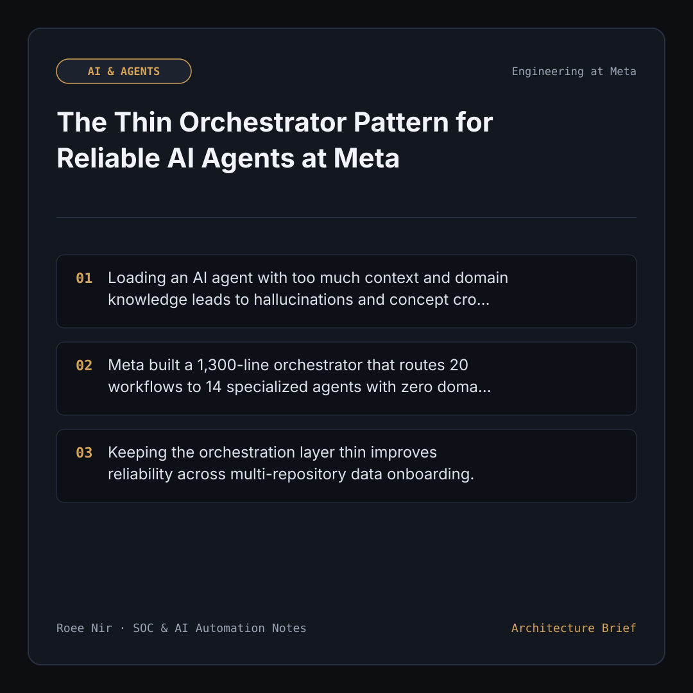

MANUAL PUBLISH PACK · Never auto-posted to LinkedIn without your click.
1. Visual Card (1080x1080)

2. פוסט מוכן + תגובה ראשונה
לפעמים, לתת לסוכן ה AI את כל הידע שהוא צריך זו בדיוק הגישה השגויה. במהלך פיתוח מערכות אוטומציה להעלאת עמודי מידע במערכות ההמלצה של Meta, צוות ההנדסה גילה שכאשר מעמיסים על סוכן מרכזי את כל חוקי הקוד והקונפיגורציות, הביצועים דווקא יורדים. המודל החל לערבב בין קונספטים ולהחיל חוקי קוד ממערכת אחת על אחרת בגלל חציית רף הקונטקסט. הפתרון שנבנה ב Meta נקרא דפוס האורקסטרטור הרזה, שבו בנו מנהל ניתוב המורכב מ 1300 שורות קוד בלבד המנתב למעלה מ 20 זרימות עבודה ל 14 סוכנים מתמחים. האורקסטרטור עצמו מבצע אפס עבודה בתחום הדחיסה או הלוגיקה העסקית, ומתמקד אך ורק ברצפים ובבדיקות אמינות בזמן שסוכנים ייעודיים מטפלים בלוגיקה. זה לא אומר שצריך לוותר לחלוטין על מודלי ענק חכמים. אבל זו הוכחה לכך שארכיטקטורה מבוזרת מנצחת מונוליטים גדולים. הסיפור הגדול כאן הוא המעבר מתפיסת מודל אחד שיודע הכול אל מבנה ניהול דטרמיניסטי שמזכיר מיקרו-שירותים בעולם התוכנה המסורתי. איך אתם מחלקים את העבודה בין הסוכנים במערכות שלכם? #AIAgents #MachineLearning #SystemArchitecture #AIAutomation #Engineering #Meta
תגובה ראשונה (לשמירה על חשיפה אורגנית):
לקריאת המחקר והפירוט הטכני המלא מתוך Engineering at Meta: https://engineering.fb.com/2026/10/19/ml-applications/thin-orchestrator-ai-agent-architecture/